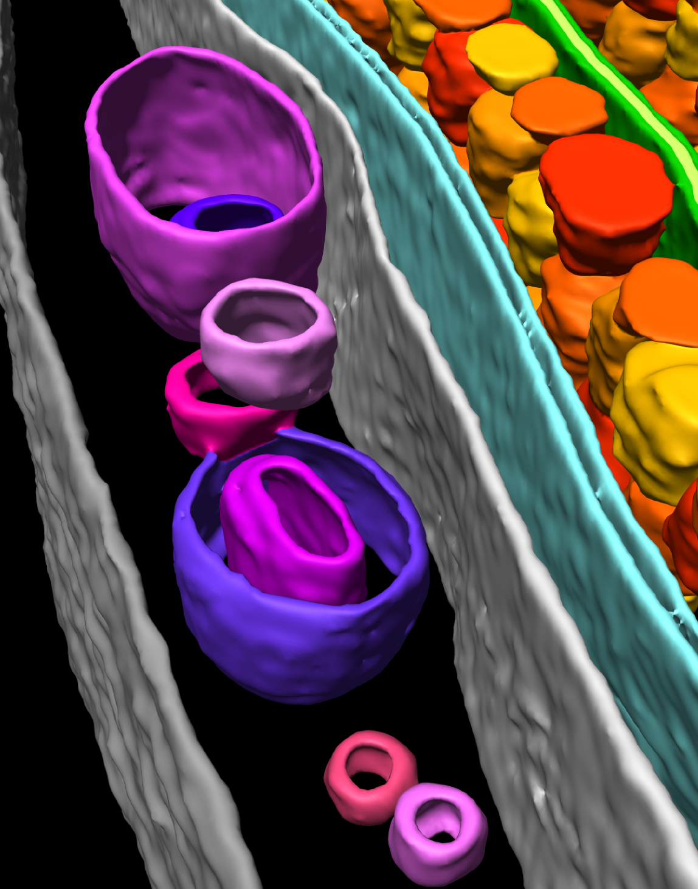
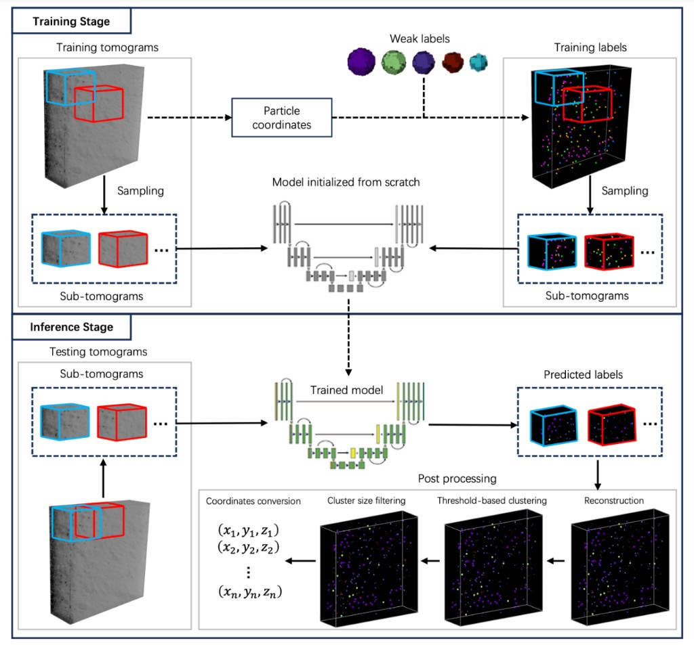

蒙玺投资 · 上海
AI 算法研究员（实习）
Base 由合肥转至上海 · 暑期实习
- 研发并优化 1min bar 高频预测 与 T0 时序预测 模型
- 探索深度学习因子筛选方法，提升因子有效性与模型表现
- 应用模型蒸馏压缩模型规模，提升推理效率

AI / Machine Learning Engineer
中国科学技术大学少年班学院人工智能专业本科在读，专注于深度学习、3D 计算机视觉与量化投研。Kaggle CryoET 3D 粒子检测国际竞赛第 2 名 / 931 队（金牌，$12,000 奖金），拥有量化高频预测建模与自动驾驶感知算法的实习经验。
AI 算法研究员（实习）
Base 由合肥转至上海 · 暑期实习
机器学习研究员（实习）
主导优化 1 分钟级别高频投研预测模型，独立探索多种提升预测精度的研究方向：
生成仿真大模型算法工程师（实习）
汽车部 › 自动驾驶部 › 感知算法部 › 真值系统

CryoET（冷冻电镜断层扫描）3D 粒子检测国际竞赛，在 3D 细胞图像中定位并标注多种蛋白质复合物。共 6,855 名参赛者，27,971 次提交。

全国一等奖 浙江赛区 · 全省第 91 名 · 高二阶段获得